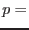
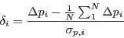
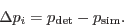
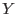
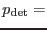
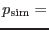
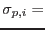

XMM-Newton Science Analysis System
eimsimreduce (eimsim-2.3) [xmmsas_20170112_1337-16.0.0]
For  each of the input source-list columns X, Y and FLUX: makes a frequency histogram of relative  offset.
offset.
`Frequency histogram' means that the area under this histogram is equal to the number of rows  in the merged list. The
in the merged list. The  axis of the plot is the quantity
axis of the plot is the quantity

where

The interpretation of these quantities in column terms, taking for the sake of an example the  spatial coordinate, is
 Y,
 SIM_Y and  Y_ERR.
These histograms are written to tables named REL.
Figure 1:
Fluxes of simulated vs detected sources (100 runs, 2xmm detection).
|
Figure 2:
The variation of matching probability with source brightness (100 runs, 2xmm detection).
|
XMM-Newton SOC/SSC -- 2017-01-12